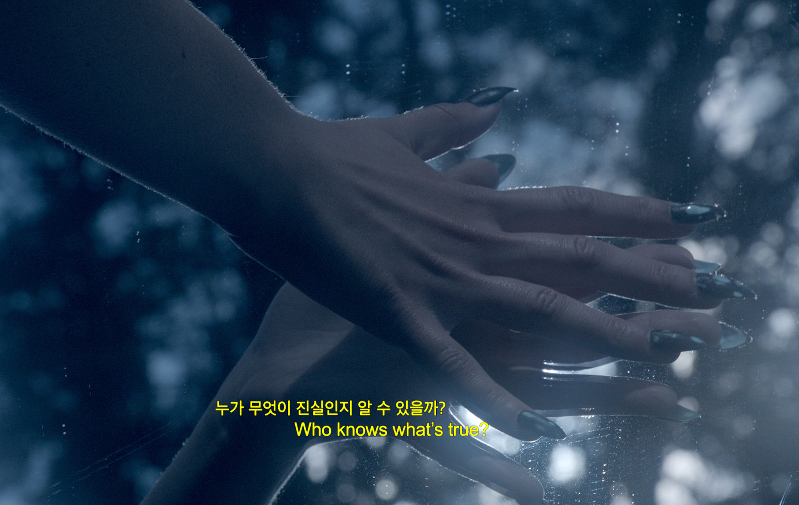

NEW UTOPIAS
EMERGED
Not a happy place, not an error, but a dystopian consensual hallucination. What in some years would become what we understand as Internet was first born out of gritty cyberpunk fiction, a cyberspace imagined as a trash fire in response to a trash fire. So how did this apocalyptic vision—written in the shadows of the Cold War and the coming nuclear annihilation—become utopian? The aspiration for a space of freedom, escape, and libertarian self-interest rises from individual voices of freedom that ultimately erased so many people. Dystopia created utopia, as utopia created dystopia. The juxtaposition of expectations on behalf of an immaterial space propelled us into an everlasting world of idealism.
[A] Chun, Wendy. 2021. Discriminating Data: Correlation, Neighborhoods, and the New Politics of Recognition.
[B] Crawford, Kate. 2021. Atlas of AI: Power, Politics, and the Planetary Costs of Artificial Intelligence.
Ai=the apocalypse It ends human work; it ends human freedom; indeed, it ends everything human. (...) AI systems are not autonomous, or even able to discern anything without extensive, computationally intensive training with large datasets or predefined rules. In fact, artificial intelligence as we know it depends entirely on a much wider set of political and social structures. (...) In this sense, artificial intelligence is a registry of power.
Artificial intelligence is an idea, an infrastructure, an industry, a form of exercising power, and a way of seeing. All these things are part of what artificial intelligence is—a two-word phrase onto which is mapped a complex set of expectations, ideologies, desires, and fears.
[B]
Utopian Dreams In the place of governments stood individual voices of freedom who by authority of liberty, spoke on behalf of a “we” to declare the global social space we are building to be naturally independent of the tyrannies you seek to impose on us. You have no moral right to rule us nor do you possess any methods of enforcement we have true reason to fear...
We are creating a world that all may enter without privilege or prejudice accorded by race, economic power, military force, or station of birth.
We are creating a world where anyone, anywhere may express his or her beliefs, no matter how singular, without fear of being coerced into silence or conformity.
Your legal concepts of property, expression, identity, movement, and context do not apply to us...
Our identities have no bodies, so, unlike you, we cannot obtain order by physical coercion.
We believe that from ethics, enlightened self-interest, and the commonwealth, our governance will emerge.
[A]

Stills from the short film Information
Skies (2017), by Metahaven